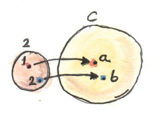
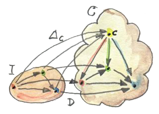
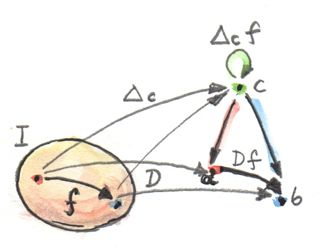
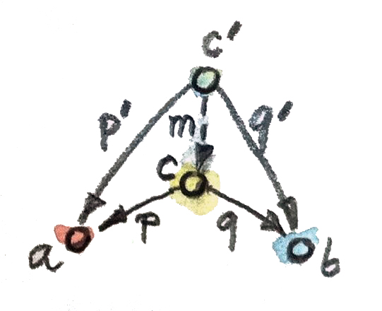

13 LimitและColimit (Sketch)
มันเหมือนกับว่าในทฤษฎีcategoryทุกอย่างนั้นเกี่ยวข้องกับทุกๆอย่างและทุกๆอย่างสามารถที่จะถูกมองจากหลายๆมุม ยกตัวอย่างเช่นการสร้างแบบสากลของproduct ในตอนนี้เรารู้มากขึ้นเกี่ยวกับfunctorและการแปลงแบบธรรมชาติ เราสามารถที่จะทำให้ง่ายขึ้นและถ้าเป็นไปได้generalizeได้หรือไม่? เรามาลองดูกัน

การสร้างของproductเริ่มด้วยการเลือกวัตถุสองวัตถุ\(a\)และ\(b\)ที่productของพวกมันเป็นสิ่งที่เราต้องการสร้าง แค่มันหมายความว่าอะไรในการเลือกวัตถุต่างๆ? เราสามารถที่จะใช้คำใหม่ในการกระทำนี้ในแบบที่มีความเป็นcategoryมากกว่านี้? สองวัตถุสร้างให้เกิดรูปแบบ เป็นรูปแบบที่เรียบง่าย เราสามารถทำให้รูปแบบนี้เป็นนามธรรมไปยังcategory เป็นcategoryที่เรียบง่ายแต่ก็ยังเป็นcategory มันคือcategoryที่เราจะเรียกว่า\(\textbf{2}\) มันมีแค่สองวัตถุ\(1\)และ\(2\)และไม่มีmorphismนอกเหนือไปจากidentityที่มีอยู่แล้ว ในตอนนี้เราสามารถที่จะเปลี่ยนคำของการเลือกของสองวัตถุใน\(\textbf{C}\)ในฐานะการนิยามfunctor\(D\)จาก\(\textbf{2}\)ไปยัง\(\textbf{C}\) functorนั้นโยงวัตถุไปยังวัตถุ ดังนั้นimageของมันจรึงเป็นแค่สองวัตถุ(หรือใันอาจจะเป็นหนึ่ง ถ้าfunctorรวบวัตถุเข้าด้วยกัน ที่ก็ไม่มีปัญหา)มันก็โยงmorphismต่างๆที่ในที่นี้มันแค่โยงmorphismแบบidentityไปยังmorphismแบบidentity
สิ่งที่ยอดเยี่ยมเกี่ยวกับแนวทางนี้คือว่ามันสร้างแนวคิดทางcategoryที่หลบเลี่ยงคำอธิบายที่คลุมเครืออย่าง”การเลือกวัตถุ“ที่นำโดยตรงมาจากคำศัพท์ของคนเก็บของป่าล่าสัตว์ที่เป็นบรรพบุรุษของเรา และโดยบังเอิญมันก็สามารถgeneralizeได้ไม่ยากเพราะว่าไม่มีอะไรเลยที่จะหยุดเราจากการใช้categoryที่มีความชับช้อนมากว่า\(\textbf{2}\)ในการนิยามรูปแบบของเรา

แต่เรามาต่อกัน ในขั้นตอนต่อไปในคำนิยามของproductคือการเลือกของวัตถุ\(c\)ที่มีคุณสมบัติ ในที่นี้เราสามารถแปลงคำของการเลือกในรูปแบบของfunctorที่ามจากcategoryที่มีวัตถุเดียว และแน่นอนว่าถ้าเราจะใช้Kan extensionsที่ก็จะเป็นสิ่งที่ถูกต้องที่จะทำ แต่เนื่องว่าเรายังไม่พร้อมสำหรับKan extensionsแต่ก็มีอีกเคล็ดลับที่เราสามารถใช้ได้นั้นก็คือconstant functor\(\Delta\)จากcategory\(\textbf{2}\)เหมือนเดิมไปยัง\(\textbf{C}\) ในการเลือกของ\(c\)ใน\(\textbf{C}\)สามารถถูกทำได้โดย\(\Delta_c\) จำได้ว่า\(\Delta_c\)โยงทุกๆวัตถุไปยัง\(c\)และทุกๆmorphismไปยัง\(\operatorname{id}_c\)

ในตอนนี้เรามีfunctorสองตัว\(\Delta_c\)และ\(D\)ที่ไปมาระหว่าง\(\textbf{2}\)และ\(\textbf{C}\)ดังนั้นมันสิ่งทั่วไปที่จะถามเกี่ยวกับการแปลงแบบธรรมชาติระหว่างมัน เนื่องด้วยได้มีแค่สองวัตถุใน\(\textbf{2}\) การแปลงแบบธรรมชาติจึงมีสองตัวประกอบ วัตถุ\(1\)ใน\(\textbf{2}\)คือการโยงจาก\(c\)โดย\(\Delta_c\)และ\(a\)โดย\(D\) ดังนั้นส่วนประกอบของการแปลงแบบธรรมชาติระหว่าง\(\Delta_c\)และ\(D\)ที่\(1\)คือmorphismจาก\(c\)ไปยัง\(a\) เราสามารถที่จะเรียกมันว่า\(p\) ในทางเดียวกันส่วนประกอบที่สองคือmorphsism\(q\)จาก\(c\)ไปยัง\(b\) (คือimageของวัตถุ\(2\) ใน\(\textbf{2}\)ภายใต้\(D\)) แต่สิ่งเหล่านี้นั้นเหมือนอย่างแน่นอนกับprojectionทั้งสองที่เราใช้ในนิยามดั้งเดิมของproduct ดังนั้นแทนที่จะพูดเกี่ยวกับการเลือกวัตถุและการproject เราสามารถแค่พูดเกี่ยวกับการเลือกfunctorและการแปลงแบบธรรมชาติ มันก็เป็นการที่ว่าในกรณีที่เรียบง่าย เงื่อนไขของความเป็นธรรมชาติสำหรับการแปลงของเรานั้นถูกบรรลุแล้วอย่างง่ายดายเพราะว่าได้ไม่มีmorphism(นอกเหนือไปจากidentity)ใน\(\textbf{2}\)

ในการวางนัยของการสร้างนี้ของcategoryนอกเหนือจาก\(\textbf{C}\) (ที่ที่ตัวอย่างเช่นมีmorphismที่ไม่ตรงไปตรงมา)จะมีการบังคับใช้เงื่อนไขแบบธรรมชาติบนการแปลงระหว่าง\(\Delta_c\)และ\(D\) เราเรียกการเปลียนแปลงแบบนี้ว่าconeเพราะว่าimageของ\(\Delta\)คือยอดของกรวยหรือpyramidที่ด้านข้าง(ของรูป)นั้นสร้างโดยส่วนประกอบของการแปลงแบบธรรมชาติ imageของ\(D\)สร้างออกมาเป็นฐานของcone
โดยทั่วๆไป ในการสร้างcone เราเริ่มด้วยcategory\(\textbf{I}\)ที่ได้นิยามรูปแบบ มันคือcategoryที่จำกัดแต่มีขนาดเล็ก เราได้เลือกfunctor\(D\)จาก\(\textbf{I}\)ไปยัง\(\textbf{D}\)และเรียกมัน(หรือimageของมัน)ว่าdiagram เราเลือกบาง\(c\)ใน\(\textbf{C}\)ในฐานะยอดของconeของเรา เราใช้มันในการนิยามfunctorแบบconstant\(\Delta_c\)จาก\(\textbf{I}\)ไปยัง\(\textbf{C}\) การแปลงแบบธรรมชาติจาก\(\Delta_c\)ไปยัง\(D\)ที่คือconeของเรา สำหรับ\(\textbf{I}\)ที่จำกัด มันคือแค่กลุ่มของmorphismที่เชื่อม\(c\)ไปยังdiagramนั้นคือimageของ\(\textbf{I}\)ภายใต้\(D\)

ความเป็นธรรมชาติกำหนดให้มีว่าทุกๆสามเหลี่ยม(ที่เป็นผนังของปิรามิด)ในdiagramนั้นcommute แน่นอนว่าmorphism\(f\)ใดๆก็ตามใน\(\textbf{I}\) functor\(D\)โยงมันไปยังmorphism\(Df\)ใน\(\textbf{C}\) morphismที่ก่อเป็นฐานของสามเหลี่ยมบางตัว functorที่เป็นconstant\(\Delta_c\)โยง\(f\)ไปยังmorphismแบบdentityบน\(c\) \(\Delta\)รวบจุดสุดท้ายทั้งสองของmorphismไปยังวัตถุหหนึ่ง และสี่เหลี่ยมของความเป็นธรรมชาติกลายเป็นสามเหลี่ยมที่commute ในสองแขนของสามเหลี่ยมนั้นคือส่วนประกอบของการแปลงแบบธรรมชาติ

นั้นคือcone สิ่งที่เราสนใจคือconeที่เป็นสากลเหมือนกับการที่เราเลือกวัตถุที่เป็นสากรสำหรับนิยามของproduct
ได้มีหลายวิธีในการทำแบบนี้ ตัวอย่างเช่นเราอาจจะนิยามcategoryของconeตามมาจากfunctor\(D\)ที่ให้มา วัตถุในcategoryนั้นคือconeต่างๆ แต่ไม่ใช่ทุกๆวัตถุ\(c\)ใน\(\textbf{C}\)ที่จะสามารถเป็นยอดของconeได้เพราะว่าได้อาจจะไม่มีการแปลงแบบธรรมชาติระหว่าง\(\Delta_c\)และ\(D\)
ในการทำให้มันเป็นcategory เราก็ต้องการนิยามmorphismระหว่างcone นั้นอาจจะถูกกำหนดโดยmorphismระหว่างจุดยอดของมัน แต่ไม่ใช่แค่ทุกๆmorphismจะทำได้ จงจำว่า ในการสร้างของเราต่อproductเราบังคับใช้เงื่อนไขที่morphismระหว่างวัตถุที่มีคุณสมบัติ(อย่างยอด)ต้องเป็นตัวประกอบร่วมกันสำหรับprojectionตัวอย่างเช่น
p' = p . m
q' = q . m
ในกรณีทั่วไปเงื่อนไขนี้แปลไปเป็นเงื่อนไขที่สามเหลี่ยมเหล่านี้ที่ด้านข้างหนึ่งคือการ แยกตัวแปรmorphismต่างๆต้องcommute

เราจะนำmorphismที่แยกตัวประกอบในฐานะmorphismในcategoryของconeของเรา มันง่ายที่จะตรวจสอบว่าmorphismเหล่านี้นั้นสามารถประกอบกันได้และการที่morphismแบบidentityคือmorphismที่แยกตัวประกอบเช่นเดียวกัน coneนั้นจึงก่อให้เกิดcategory
ในที่นี้เราสามารถนิยามconeสากลในฐานะวัตถุสุดท้ายในcategoryของcone นิยามของวัตถุสุดท้ายบอกว่าได้มีmorphismเอกลักษณ์(และอันเดียว)จากวัตถุใดๆก็ตามไปยังวัตถุนี้ ในกรณีของเรามันหมายความว่าได้มีmorphismแยกตัวประกอบที่เป็นเอกลักษณ์(และอันเดียว)จากยอดของconeใดๆก็ตามไปยังยอดของconeสากล เราเรียกconeสากลนี้ว่าlimitของdiagram\(D\) อย่าง\(\lim D\) (โดยทั่วไปเราจะเห็นในบ่อยครั้งลูกศรจากขวาไปช้ายที่ชี้ไปยัง\(I\)ข้างล่างสัญลักษณ์,\(\lim\)) โดยทั่วไปแล้วในแบบสั้นๆ เราเรียกยอกของconeนี้ว่าlimit(หรือวัตถุlimit)
แนวคิดนี้คือการที่ว่าlimitมีคุณสมบัติของทั้งdiagramในวัตถุๆเดียวอยู่ในตัว ตัวอย่างเช่นlimitของdiagramที่มีสองวัตถุของเราคือproductของวัตถุทั้งสอง product(คู่กับprojectionทั้งสอง)เก็บข้อมูลทั้งสองวัตถุไว้ และการที่เป็นสากลหมายความว่ามันไม่มีของที่ไม่ความสำคัญ
13.1 Limitในฐานะisomorphismธรรมชาติ
ได้มีบางอย่างที่ไม่ค่อยพอใจเกี่ยวกับนิยามนี้ของlimit ผมหมายความว่ามันใช้ได้แต่เรายังต้องมีเงื่อนไขcommutativeนี้สำหรับสามเหลี่ยมเหล่านี้ที่เชื่อมสองconeใดๆก็ตาม มันอาจจะทีความสวยงามมากกว่าถ้าเราอาจจะแทนที่มันด้วยบางเงื่อนไขisomorphismธรรมชาติ แต่แล้วอย่างไร
เราไม่ได้ทำงานกับconeตัวเดียวอีกแล้วแต่กับทั้งชุด(ในความเป็นจริงแล้วคือcategory)ของcone ถ้าlimitนั้นมีตัวตนอยู่(และถ้าทำให้ชัดเจนมากขึ้นไม่มีการรับประกันนี้) หนึ่งในconeของconeทั้งหมดคือconeสากล ในconeอื่นๆที่เหลือ เรามีmorphismแยกตัวประกอบที่เป็นเอกลักษณ์(และอันเดียว)ที่โยงยอดของมันที่เราจะเรียกว่า\(c\)ไปยังยอดของconeสากลที่เราจะเรียกมันว่า\(\lim D\) (ในความเป็นจริงแล้ว เราสามารถข้ามคำว่า”อื่นๆ”เพราะว่าmorphismแบบidentityโยงconeสากลไปยังตนเองและมันแยกตัวประกอบฉ่านตนเองอย่างง่ายๆ) ให้ผมได้ทำซ้ำในส่วนของที่สำคัญคือถ้ามีconeใดๆก็ตาม ได้มีmorphismที่เป็นเอกลักษณ์(และอันเดียว)ในแบบที่เป็นพิเศษ เรามีการโยงของconeไปยังmorphismพิเศษและมันคือการโยงแบบหนึ่งต่อหนึ่ง
morphismพิเศษนี้คือสมาชิกของhom-set\(\textbf{C}(c,\lim D)\) สมาชิกอื่นๆของhom-setนี้นั้นไม่ค่อยโชคดีนั้ก ในความหมายที่ว่าพวกมันไม่ได้แยกตัวประกอบของการโยงของconeทั้งสอง สิ่งที่เราสามารถที่จะเลือกในแต่ละ\(c\) morphismนึ่งจากset\(\textbf{C}(c,\lim D)\) (นั้นก็คือmorphismที่บรรลุบางเงื่อนไขของความเป็นcommutative) แล้วนั้นดูเหมือนการนิยามการแปลงแบบธรรมชาติหรือเปล่า มันใช่อย่างแน่นอน!
แต่อะไรคือfunctorที่มีความสัมพันธ์โดยการแปลงนี้
functorหนึ่งคือการโยงจาก\(c\)ไปยังset\(\textbf{C}(c, \lim D)\) มันคือfunctorจาก\(\textbf{C}\)ไปยัง\(\textbf{Set}\)ที่มันโยงวัตถุไปยังset ในความเป็นจริงแแล้วมันคือfunctorแบบcontravariant ที่นี้คือวิธีการเรานิยามการกระทำของมันบนmorphissm เรามาลองดูmorphism\(f\)จาก\(c'\)ไปยัง\(c\)ว่า
\[ f::c'\rightarrow c \]
functorของเราโยง\(c'\)ไปยังset\(\textbf{C}(c', \lim D)\) ในการนิยามการกระทำนี้ของfunctorนี้บน\(f\) (ในอีกความหมายหนึ่งคือการlift\(f\)) เราต้องนิยามการโยงในแบบที่ตรงกันระหว่าง\(\textbf{C}(c, \lim D)\)และ\(\textbf{C}(c', \lim D)\) ดังนั้นเรามาเลือกหนึ่งสมาชิก\(u\)ของ\(\textbf{C}(c, \lim D)\)และดูว่าถ้าเราสามารถที่จะโยงมันไปบางสมาชิกของ\(\textbf{C}(c', \lim D)\) สมาชิกของhom-setคือmorphismดังนั้นเรามี
\[ u::c\rightarrow \lim D \]
เราสามารถทำการประกอบก่อน\(u\)ด้วย\(f\)เพื่อที่จะได้
\[ u.f::c'\rightarrow \lim D \]
และมันคือสมาชิกของ\(\textbf{C}(c', \lim D)\) ดังนั้นแน่นอนว่าเราสามารถสร้างการโยงของmorphismว่า
contramap :: (c' -> c) -> (c -> LimD) -> (c' -> LimD)
contramap f u = u . fสังเกตว่าการกลับกันในลำดับของ\(c\)และ\(c'\)คือลักษณะเฉพาะของfunctorแบบcontravariant

ในการนิยามการแปลงแบบธรรมชาติ เราต้องมีfunctorอีกตัวหหนึ่งที่ก็คือการโยงจาก\(\textbf{C}\)ไปยัง\(\textbf{Set}\) แต่ในตอนนี้เราจะพิจารณาsetของcone coneก็คือแค่การแปลงแบบธรรมชาติ ดังนั้นเรากำลังมองไปยังsetของการแปลงแบบธรรมชาติ\(\operatorname{Nat}(\Delta_c,D)\) การโยงระหว่าง \(\textbf{C}\)ไปยังsetเฉพาะของการแปลงแบบธรรมชาติคือfunctor(แบบcontravariant) เราสามารถที่จะแสดงสิ่งนี้อย่างไร อีกครั้งเรามานิยามการกระทำของมันบนmorphism
\[ f::c'\rightarrow c \]
การliftของ\(f\)ควรที่จะเป็นการโยงของการแปลงแบบธรรมชาติระหว่างfunctorทั้งสองที่ไปจาก\(\textbf{I}\)ไปยัง\(\textbf{C}\)
\[ \operatorname{Nat}(\Delta_c, D) \to \operatorname{Nat}(\Delta_{c'}, D) \]
แล้วเราสามารถที่จะโยงการแปลงแบบธรรมชาติได้อย่างไร? ทุกๆการแปลงแบบธรรมชาติคือการเลือกของmorphismต่างๆ(ส่วนประกอบของมัน)หนึ่งmorphismสำหรับสมาชิกของ\(\textbf{I}\) ส่วนประกอบของบาง\(\alpha\)(ที่เป็นสมาชิกของ\(\operatorname{Nat}(\Delta_{c}, D)\))ที่\(a\)(ที่คือสมาชิกของ\(\textbf{I}\))คือmorphism
\[ \alpha_a :: \Delta_c a \to D a \]
หรือในการใช้นิยามของconstant functor\(\Delta\)
\[ \alpha_a :: c \to D a \]
ถ้าเรามี\(f\)และ\(\alpha\) เราต้องสร้าง\(\beta\)ที่คือสมาชิกของ\(\operatorname{Nat}(\Delta_{c'},D)\)ส่วนประกอบของมันที่\(a\)ควรที่จะเป็นmorphismอย่าง
\[ \beta_a :: c' \to D a \]
เราสามารถที่จะได้\((\beta_a)\)อย่างหลังจาก\((\alpha_a)\)ก่อนหน้าโดยการประกอบมันก่อนโดย\(f\)ที่
\[ \beta_a = \alpha_a . f \]
มันค่อนข้างง่ายกว่าในการแสดงว่าส่วนประกอบแบบนี้นั้นรวมกันเป็นการแปลงแบบธรรมชาติ

ในการให้morphismของเรา\(f\) เราต้องสร้างการโยงระหว่างสองการแปลงแบบธรรมชาติในด้านของประกอบ การโยงนี้นิยามcontramapสำหรับfunctorว่า
\[ c\rightarrow\operatorname{Nat}(\Delta_c,D) \]
สิ่งที่เราได้ทำคือการแสดงคุณว่าเรามีfunctorสองตัว(แบบcontravariant)จาก\(\textbf{C}\)ไปยัง\(\textbf{Set}\)และผมยังไม่ได้ตั้งข้อสมมติฐานอะไร(ดังนั้นfunctorเหล่านี้มีตัวตนอยู่ตลอก)
โดยบังเอิญ functorแรกของfunctorเหล่านี้มีบทบาทที่สำคัญในทฤษฎีcategoryและเราจะเห็นมันอีกครังในตอนที่เราพูดเกี่ยวกับlemmaของYoneda ได้มีชื่อสำหรับfunctorแบบcontravariantจากcategory\(\textbf{C}\)อะไรก็ตามไปยัง\(\textbf{Set}\)ที่พวกมันถูกเรียกว่า”presheaves” สิ่งนี้ถูกเรียกว่าpresheafที่representableได้และfunctorตัวที่สองนั้นคือpresheaf
ในตอนนี้เรามีfunctorทั้งสอง เราสามารถที่จะพูดเกี่ยวกับการแปลงแบบธรรมชาติระหว่างมัน ดังนั้นเพื่อไม่ให้เป็นการเสียเวลานี้คือบทสรุปคือfunctor\(D\)จาก\(\textbf{I}\)ไปยัง\(\textbf{C}\)มีlimit\(\lim D\)ก็ต่อเมื่อได้มีisomorphismที่เป็นธรรมชาติระหว่างfunctorทั้งสองที่ผมได้แค่นิยาม
\[ \textbf{C}(c, \lim D)\cong\operatorname{Nat}(\Delta_c, D) \]
ให้ผมได้เตือนความจำคุณว่าอะไรคือisomorphismที่เป็นธรรมชาติ มันคือการแปลงแบบธรรมชาติที่ทุกๆสวนประกอบคือisomorphismที่คือการบอกว่าคือmorphismที่สามารถinvertได้
ผมจะไม่พิจารณาการพิสูจน์ในส่วนๆนี้ กระบวนการนี้นั้นค่อนข้างตรงไปตรงมาถ้าไม่ก็น่าเบื่อ ในการทำงานกับการแปลงแบบธรรมชาติ คุณมักจะสนใจไปยังส่วนประกอบที่ก็คือmorphism ในกรณีนี้ เนื่องด้วยเป้าหมายของfunctorทั้งสองคือ\(\textbf{Set}\) ส่วนประกอบisomorphismที่เป็นธรรมชาติจะเป็นfunction สิ่งเหล่านี้คือfunctionแบบhigher-order เพราะว่าพวกมันไปจากhom-setไปยังsetของการแปลงแบบธรรมชาติ ในอีกครั้งคุณสามารถที่จะวิเคราะห์functionโดยการพิจารณาสิ่งที่มันทำกับargumentของมันที่ในที่นี้argumentต้องเป็นmorphism(ที่คือสมาชิกของ\(\textbf{C}(c,\lim D)\))และผลลัพธ์จะเป็นการแปลงแบบธรรมชาติ(ที่คือสมาชิกของ\(\operatorname{Nat}(\Delta_c, D)\))หรือสิ่งที่เราเรียกว่าcone การแปลงแบบธรรมชาตินี้ในทางกลับกันมีส่วนประกอบของมันเองที่ก็เป็นmorphism ดังนั้นมันคือmorphismทั้งๆหมดและถ้าคุณสามารถที่จะติดตามของมันทั้งหมด คุณสามารถพิสูจน์ข้องๆนี้
ผลลัพธ์ที่สำคัญคือการที่ว่าเงื่อนไขที่เป็นธรรมชาติสำหรับisomorphismนี้คือเงื่อนไขความเป็นcommuteสำหรับการโยงระหว่างcone
ในการแง้มดูสิ่งที่น่าสนใจที่กำลังมา ให้ผมได้กล่าวถึงว่าset\(\operatorname{Nat}(\Delta_c, D)\)สามารถถูกคิดได้ในฐานะhom-setในcategoryของfunctor ดังนั้นisomorphismแบบธรรมชาติของเราได้โยงhom-setทั้งสองเข้าด้วยกัน ที่ชี้ไปที่ความสัมพันธ์ที่มีความทั่วไปมากกว่านี้ที่เรียกว่าadjunction
13.2 ตัวอย่างของLimit
เราได้เห็นแล้วว่าproductแบบcategoryคือlimitของdiagramที่สร้างโดยcategoryที่เรียบง่ายที่เรียกว่า\(\textbf{2}\)
ได้มีตัวอย่างที่ง่ายกว่านี้สำหรับlimitนั้นคือวัตถุสุดท้าย ในความคิดแรกอาจจะถูกคิดถึงcategoryที่มีวัตถุเดี่ยวในการนำไปสู่วัตถุสุดท้ายแต่ความเป็นจริงแล้วนั้นยิ่งกว่านี้คือการที่ว่าวัตถุสุดท้ายคือlimitที่สร้างโดยcategoryว่าง functorจากcategoryว่างไม่ได้เลือกวัตถุใดๆเลยดังนั้นconeหดตัวไปเป็นยอด coneที่เป็นสากลคือยอดเดี่ยวที่มีmorphismที่เป็นเอกลักษณ์(และอันเดียว)ที่มาจากมันไปยังอีกยอดหนึ่ง เราจะจำแนกมันได้ในฐานะนิยามของวัตถุสุดท้าย
limitตัวต่อไปที่น่าสนใจถูกเรียกว่าequalaizerมันคือlimitที่สร้างโดยcategoryที่มีสองสมาชิกกับmorphismที่ขนานกันที่ไปมาระหว่างมัน (และโดยทั่วไปก็จะมีmorphismแบบidentity) categoryนี้เลือกdiagramใน\(\textbf{C}\)ที่ประกอบด้วยสองวัตถุ\(a\)และ\(b\)และmorphismสองตัว
f :: a -> b
g :: a -> bในการสร้างconeข้างบนdiagramนี้ เราต้องเพื่มยอด\(c\)ของมันและprojectionทั้งสอง
p :: c -> a
q :: c -> b
เราได้มีสามเหลี่ยมที่ต้องcommute
q = f . p
q = g . pสิ่งนี้บอกเราว่า\(q\)นั้นถูกกำหนดให้เป็นเอกลักษณ์(และอันเดียว)โดยหนึ่งในสมการเหล่านี้อย่างq=f.pและเราสามารถละเว้นมันจากรูปๆนี้ ดังนั้นเราจะเหลือแค่เงื่อนไขๆเดียว
f . p = g . pวิธีการคิดเกี่ยวกับสิ่งนี้คือการที่ว่าถ้าเราจำกัดความสนใจของเราไปยัง\(\textbf{Set}\) imageของfunction\(p\)เลือกsetย่อยของ\(a\) ในตอนที่จำกัดไปยังsetย่อยนี้ function\(f\) และ\(g\)นั้นเท่ากัน
ตัวอย่างเช่นในการนำ\(a\)ไปเป็นระนาบสองมิติที่ถูกparameterizedโดยพิกัด\(x\)และ\(y\) ลองนำ\(b\)ไปเป็นเส้นจำนวนจริงและนำfunctionเหล่านี้
f (x, y) = 2 * y + x
g (x, y) = y - xequalizerจากfunctionทั้งสองคือsetของจำนวนจริง(จุดยอด\(c\))และfunction
p t = (t, (-2) * t)สังเกตว่า\((p \ t)\)นิยามเส้นตรงในระนาบสองมิติ ตามเส้นๆนี้ทั้งสองfunctionนั้นเท่ากัน
แน่นอนว่า ได้มีอีกset\(c'\)และfunction\(p'\)ที่อาจจะนำไปสู่ความเท่ากัน
f . p' = g . p'แต่พวมมันทั้งหมดนั้นแยกตัวประกอบออกมาอย่างเป็นเอกลักษณ์(และอันเดียว)ผ่าน\(p\) ตัวอย่างเช่นเราสามารถนำsetที่มีสมาชิกเดี่ยว\(()\)ในฐานะ\(c'\)และfunction
p'() = (0, 0)ในconeที่ดีเพราะว่า\(f(0,0)=g(0,0)\)แต่มันไม่ได้เป็นสากลเพราะว่าการแยกตัวประกอบที่เป็นเอกลักษณ์(และอันเดียว)ผ่าน\(h\)
p' = p . hกับ
h () = 0
equalizerจึงสามารถถูกใช้ในการแก้สมาการของประเภท\(f \ x = g \ x\) แต่มันมีความทั่วไปมากกว่านี้เพราะว่ามันถูกนิยามในเชิงของวัตถุและmorphismแทนที่จะเป็นในแบบของพีชคณิต
และในแนวคิดที่ทั่วไปมากกว่าของการแก้สมาการถูกแฝงไว้ในlimitอีกตัวนั้นคือpullback ในที่นี้เรายังมีmorphismสองตัวที่เราต้องการที่จะทำให้เท่ากัน แต่ในตอนนี้domainของพวกมันนั้นแตกต่างกัน เราเริ่มด้วยcategoryที่มีสามวัตถุที่เป็นรูปของ \(1\rightarrow 2\leftarrow 3\) diagramที่คู่กับcategoryนี้ประกอบด้วยสามวัตถุอย่าง\(a\), \(b\)และ\(c\)และmorphismสองตัว
f :: a -> b
g :: c -> bdiagramอย่างนี้มันจะถูกเรียกว่าcospan
coneที่สร้างบนdiagramนี้ประกอบด้วยยอด\(d\)และmorphismสามตัว
p :: d -> a
q :: d -> c
r :: d -> b
เงื่อนไขความเป็นcommutativeบอกเราว่า\(r\)นั้นถูกกำหนดโดยทั้งหมดโดยmorphismอื่นๆและสามารถถูกละเว้นจากรูปๆนี้ ดังนั้นเราเหลือแค่เงื่อนไขดังนี้ว่า
g . q = f . ppullbackคือconeสากลของรูปทรงนี้

ในอีกครั้ง ถ้าคุณบีบความสนใจไปยังset คุณสามารถคิดของวัตถุ\(d\)ในการที่ประกอบด้วยคู่ของสมาชิกจาก\(a\)และ\(c\)ที่\(f\)กระทำบนส่วนประกอบแรกนั้นเท่ากับที่\(g\)กระทำบนส่วนประกอบที่สอง ถ้าสิ่งนี้ยังกว้างเกินไป ลองพิจารณากรณีที่พิเศษที่ที่\(g\)คือfunctionที่มีค่าเดียว(constant function)อย่าง \(g\_=1.23\) (สมมติว่า\(b\)คือsetของจำนวนจริง) ดังนั้นคุณกำลังแก้สมการนี้จริงๆ
f x = 1.23ในกรณีนี้ในการเลือก\(c\)นั้นไม่มีความสำคัญ (ตราบเท่าทีมันไม่ใช่setว่าง)ดังนั้นเราสามารถให้มันเป็นsetที่มีสมาชิกเดี่ยว ตัวอย่างเช่นset\(a\)อาจจะเป็นsetของvectorสามมิติและ\(f\)คือvectorที่มีความยาว\(1.23\) (คำตอบของสมการ\(\sqrt{(x^2+y^2+z^2)}=1.23\))และ\(()\)คือสมาชิกเปล่าๆของsetที่มีสมาชิกเดี่ยว
แต่pullbackนั้นมีการใช้งานที่กว้างกว่านี้รวมไปถึงการเขียนโปรแกรม ตัวอย่างเช่นลองพิจารณาclassต่างๆของC++ในฐานะcategoryที่morphismคือลูกศรที่เชื่อมsubclassไปยังsuperclassess เราจะพิจารณาinheritanceเป็นคุณสมบัติที่transitiveดังนั้นถ้าCinheritsจากBและBinheritsจากAดังนั้นเราจะบอกว่าCinheritsจากA(อย่างไรก็ตามคุณสามารถที่จะส่งpointerจากCในที่ๆpointerที่ชี้ไปยังAนั้นคาดไว้แล้ว) รวมไปถึงเราจะสันนิษฐานว่าCนั้นinheritsมาจากCดังนั้นเรามีลูกศรidentityของทุกๆclass ในการทำclassย่อยนั้นตรงกับการทำtypeย่อย C++นั้นยังรับรองinheritanceหลายๆตัวดังนั้นคุณสามารถสร้างdiagramของinheritanceรูปเพชรที่สองclassesฺBและCที่inheritingจากAและclassที่สี่DรวมinheretingจากBและC โดยทั่วๆไปแล้วDต้องมีสองสำเนาของAที่ไม่ค่อยเป็นที่ต้องการ แต่คุณสามารถใช้inheritanceแบบvirtualที่จะมีแค่สำเนาเดียวของAในD
มันหมายความว่าอะไรที่มีDเป็นpullbackของdiagramนี้? มันคงหมายความว่าในclassใดๆก็ตามอย่างEที่inheritsหลายตัวจากBและCนั้นก็เป็นclassย่อยของD สิ่งนี้นั้นไม่สามารถแสดงได้ในC++ ที่การทำtypeย่อยนั้นมีแต่ชื่อ (complier C++จะไม่อนุมานความสัมพันธ์ของclassแบบนี้ที่มันต้องการ”duck typing”) แต่เราอาจจะไปข้างนอกของความสัมพันธ์แบบtypeย่อยและถามแทนที่ว่าการเปลี่ยนจากEไปยังDนั้นsafeหรือเปล่า การเปลี่ยนจะsafeถ้าDคือการรวมกันในจำนวนที่น้อยที่สุดของBและCที่ไม่มีข้อมูลเพิ่มและไม่มีการoverridingของmethod และแน่นอนว่าจะไม่มีpullbackถ้าไม่มีความขัดแย้งระหว่างบางmethodของBและC

ได้มีการใช้งานของpullbackที่ชับช้อนด้วยในtype inference ได้มีในหลายครั้งความต้องการที่จะรวมtypeของexpressionทั้งสอง ตัวอย่างเช่นสมมติว่าcomplierต้องการที่จะอนุมานtypeของfunctionว่า
twice f x = f (f x)มันจะกำหนดtypeเบื้องต้นของทุกๆvariableและexpressionย่อยโดยเฉพาะมันจะกำหนดว่า
f :: t0
x :: t1
f x :: t2
f (f x) :: t3จากสิ่งนี้มันจะอนุมานได้ว่า
twice :: t0 -> t1 -> t3มันก็จะก่อให้เกิดกลุ่มของข้อจำกัดที่เกิดมาจากกฏของการใช้งานของfunction
t0 = t1 -> t2 -- because f is applied to x
t0 = t2 -> t3 -- because f is applied to (f x)ข้อจำกัดเหล่านี้ต้องรวมกันโดยการหาsetของtype(หรือตัวแปรtype)ที่ในตอนที่แทนที่สำหรับtypeที่ไม่รู้ในexpessionทั้งสองจะสร้างtypeในแบบเดียวกัน การแทนที่ในแบบหนึ่งคือ
t1 = t2 = t3 = Int
twice :: (Int -> Int) -> Int -> Intแต่ชัดเจนว่ามันนั้นไม่ไช่สิ่งที่ทั่วไปมากที่สุด ในการแทนที่ที่ทั่วไปนั้นได้มาจากการใช้pullback ผมจะไม่ไปยังในรายละเอียดเไราะว่ามันนั้นเลยเกินขอบเขตของหนังสือเล่มนี้ แต่คุณสามารถที่จะเชื่อมั่นตัวเองว่าผลลัพธ์ควรที่จะเป็น
twice :: (t -> t) -> t -> tที่tคือตัวแปรtypeที่free
13.3 Colimits
เหมือนจะทุกการสร้างในทฤษฎีcategory limitก็มีรูปdualในcategoryตรงข้าม ถ้าคุณทำการกลับทิศทางของลูกศรทั้งหมดในcone คุณก็จะได้co-coneและตัวที่เป็นสากลของสิ่งเหล่านี้ถูกเรียกว่าcolimit สังเกตได้ว่ากาารกลับทิศทางนั้นก็มีผลต่อmorphismที่แยกตัวประกอบที่ในตอนนี้ใหลจากco-coneสากลไปยังco-coneอื่นๆ

ตัวอย่างที่เป็นทั่วไปของcolimitคือcoproductที่คู่กับdiagramที่ถูกสร้างโดย\(\textbf{2}\)diagramที่เราได้ใช้ในนิยามของproduct

ทั้งproductและcoproductเป็นตัวตนของแก่นแท้ของคู่ของวัตถุในแต่ละตัวก็มีทางที่แตกต่างกัน
เหมือนกับวัตถุสุดท้ายคือlimitดังนั้นวัตถุเริ่มตันคือcolimitที่คู่กับdiagramที่นำมาจากcategoryว่าง
dualของpullbackถูกเรียกว่าpushoutมันนั้นมาจากdiagramที่เรียกว่าspanที่ถูกสร้างโดยcategory\(1\leftarrow2\rightarrow3\)
13.4 ความต่อเนื่อง
ผมพูดก่อนหน้านี้ที่ว่าfunctorนั้นใกล้กับแนวคิดของการโยงที่มีความต่อเนื่ิองของcategoryในความหมายที่ว่าพวกมันไม่เคยทำลายการเชื่อมต่อที่(morphism)มีอยู่แล้ว นิยามจริงๆของfunctionต่อเนื่อง\(F\)จากcategory\(\textbf{C}\)ไปยัง\(\textbf{C}'\)ที่รวมความต้องการที่ว่าfunctorที่ดำรงไว้ที่limit ในทุกdiagram\(D\)ใน\(\textbf{C}\)สามารถที่จะโยงไปยังdiagram\(F\circ D\)ใน\(\textbf{C}'\)โดยการแค่ประกอบสองfunctorเข้าด้วยกัน เงื่อนไขของความต่อเนื่องสำหรับ\(F\)บอกว่า ถ้าdiagram\(D\)มีlimit\(\lim D\)ดังนั้นdiagram\(F\circ D\)ก็มีlimitด้วยและมันนั้นเท่ากันกับ\(F(\lim D)\)
สังเกตว่าimageของconeนั้นต้องเป็นconeเพราะว่าfunctorโยงmorphismไปยังmorphismและการประกอบไปยังการประกอบ สามเหลี่ยมcommutingถูกโยงไปยังสามเหลี่ยมcommutingโดยตลอด(functorดำรงไว้ในการประกอบกัน) สิ่งนี้นั้นเป็นจริงสำหรับmorphismที่แยกตัวประกอบนั้นก็คือimageของmorphismที่แยกตัวประกอบนั้นก็จะเป็นmorphismที่แยกตัวประกอบ ดังนั้นทุกๆfunctorนั้นเกือบที่จะต่อเนื่อง สิ่งที่สามารถผิดพลาดได้คือเงื่อนไขที่เป็นเอกลักษณ์(และอันเดียว) morphismที่แยกตัวประกอบใน\(\textbf{C}'\)อาจจะไม่เป็นเอกลักษณ์(และอันเดียว) ก็อาจจะมีอีก”coneที่ดีว่า”ใน\(\textbf{C}'\)ที่อาจจะไม่มีอยู่ใน\(\textbf{C}\)
hom-functorคือตัวอย่างของfunctorต่อเนื่อง จงจำแล้วว่าhom-functor\(\textbf{C}(a,b)\)คือcontravariantในตัวแปลแรกและคือcovariantในตัวแปลที่สอง ในอีกความหมายหนึ่งมันคือfunctor
\[ \textbf{C}^\text{op}\times\textbf{C}\rightarrow\textbf{Set} \]
ในตอนที่argumentที่สองนั้นถูกกำหนดแล้ว functorของhom-set(ที่อาจจะเป็นpresheafที่สามารถrepresentableได้)ที่โยงcolimitใน\(\textbf{C}\)ไปยังlimitใน\(\textbf{Set}\)และในตอนที่argumentตัวแรกนั้นถูกกำหนดแล้ว มันโยงlimitไปยังlimit
ในHaskell hom-functorคือการโยงของสองtypeใดๆก็ตามไปยังtypeแบบfunctionดังนั้นมันแค่คือ typeแบบfunctionที่paramterizedแล้ว ในตอนที่เรากำหนดparameterที่สอง เราว่าเป็นStringคือเราได้functorแบบcontravariant
newtype ToString a = ToString (a -> String)
instance Contravariant ToString where
contramap f (ToString g) = ToString (g . f)ความต่อเนื่องหมายความว่าในตอนที่ToStringนั้นถูกใช้ไปยังcolimit ตัวอย่างเช่นcoproductEither b cมันจะสร้างlimit ในกรณีนี้productของtypeแบบfunctionทั้งสองคือ
ToString (Either b c) ~ (b -> String, c -> String)แน่นอนว่าในfunctionใดๆก็ตามของEither b cนั้นถูกเขียนในฐานะstatement caseคู่กับกรณีทั้งสองถูกใช้โดยคู่ของfunction
เหมือนกัน ในตอนที่เรากำหนดargumentแรกของhom-set เราก็จะได้reader functorที่คุ้นเคย ตัวอย่างเช่นความต่อเนื่องหมายความว่าทุกๆfunctorที่return productนั้นเท่ากันกับproductของfunction โดยเฉพาะ
r -> (a, b) ~ (r -> a, r -> b)ผมรู้ว่าคุณกำลังคิดอะไรอยู่: คุณไม่ต้องการทฤษฎีcategoryในการหาสิ่งพวกนี้ และคุณก็ไม่ผิด! แต่ผมยังเห็นว่ามันประหลาดใจมากว่าผลเหล่านี้สามารถเกิดมาจากหลักการแรกที่ไม่ต้องกลับไปใช้bitหรือbytes สถาปัตยกรรมของหน่วยประมวลผล(processor architectures) เทคโนโลยีของcomplierหรือแม้กระทั่งcalculusของlambda
ถ้าคุณอยากรู้ว่าชื่อของ”limit”และ”ความต่อเนื่อง”มาจากใหน พวกมันคือการgeneralizeของแนวคิดที่ตรงกันกับcalculus ในcalculus limitและความต่อเนื่องถูกนิยามในรูปแบบของneighborhoodเปิด setเปิดที่นิยามtopologyนั้นก่อให้เกิดcategory(หรือposet)
13.5 โจทย์ท้าทาย
- ลองหาวิธีที่คุณจะอธิบายpushoutในcategoryของclassในC++
- ลองแสดงว่าlimitของfunctorแบบidentity\(\textbf{Id}::\textbf{C}\rightarrow\textbf{C}\)คือวัตถุเริ่มต้น
- setย่อยของsetที่ให้มาก่อให้เกิดcategory morphismในcategoryนั้นถูกนิยามในการเป็นลูกศรที่เชื่อมระหว่างสองset ถ้าตัวแรกคือsubsetของตัวที่สอง อะไรคือpullbackของsetทั้งสองในcategoryนี้? อะไรคือpushout? อะไรคือวัตถุเริ่มต้นและวัตถุสุดท้าย?
- คุณสามารถที่จะเดาว่าอะไรคือcoequalizer?
- ลองแสดงว่าในcategoryกับวัตถุสุดท้าย pullbackต่อวัตถุสุดท้ายคือproduct
- ในทางเดียวกันแสดงว่าpushoutจากวัตถุเริ่มต้น(ถ้ามันมีอยู่)คือcoproduct